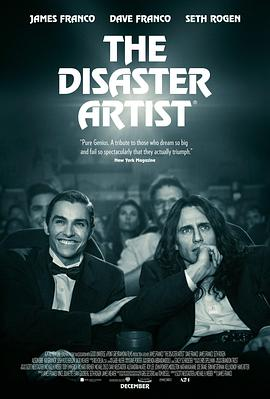

灾难艺术家 / The Disaster Artist
又名：大灾难家(台) / 荷里活烂片王(港) / The Masterpiece
作品信息
| 导演 | 詹姆斯·弗兰科 |
| 编剧 | 斯科特·纽斯塔德 / 迈克尔·H·韦伯 / 格雷戈·赛斯特罗 / 汤姆·比塞尔 |
| 主演 | 詹姆斯·弗兰科 / 戴夫·弗兰科 / 塞斯·罗根 / 艾莉·葛瑞那 / 爱丽森·布里 / 杰基·韦佛 / 保罗·谢尔 / 扎克·埃夫隆 / 乔什·哈切森 / 琼·黛安·拉斐尔 / 梅根·莫拉莉 / 杰森·曼楚克斯 / 安德鲁·桑提诺 / 内森·菲尔德 / 乔·曼德 / 莎朗·斯通 / 约翰·厄尔利 / 梅兰尼·格里菲斯 / 汉尼拔·布勒斯 / 查琳·易 / 彼得·吉尔罗伊 / 劳伦·阿什 / 舒格·林·彼尔德 / 鲍勃·奥登科克 / 布莱恩·赫斯基 / 梅根·弗格森 / 兰道尔·朴 / 斯蒂芬·刘 / 凯西·威尔逊 / 杰洛德·卡尔迈克 / 豪莎·罗克莫雷 / 凯莉·奥克斯福德 / 凯瑟·多诺休 / 德丽·海明威 / 安吉琳 / 汤姆·佛朗哥 / 佐伊·达奇 / 伊克·巴里霍尔兹 / 凯文·史密斯 / J·J·艾布拉姆斯 / 科甘-迈克尔·凯 / 亚当·斯科特 / 丹尼·麦克布莱德 / 克里斯汀·贝尔 / 贾德·阿帕图 / 丽兹·卡潘 / 托米·韦素 |
| 类型 | 剧情 / 喜剧 / 传记 |
| 制片国家/地区 | 美国 |
| 语言 | 英语 |
| 上映日期 | 2017-09-11(多伦多电影节) / 2017-12-08(美国) |
| 片长 | 103分钟 |
| IMDb | tt3521126 |
最后一次看到是 2026-08-12T21:12:05+08:00 · 豆瓣原页